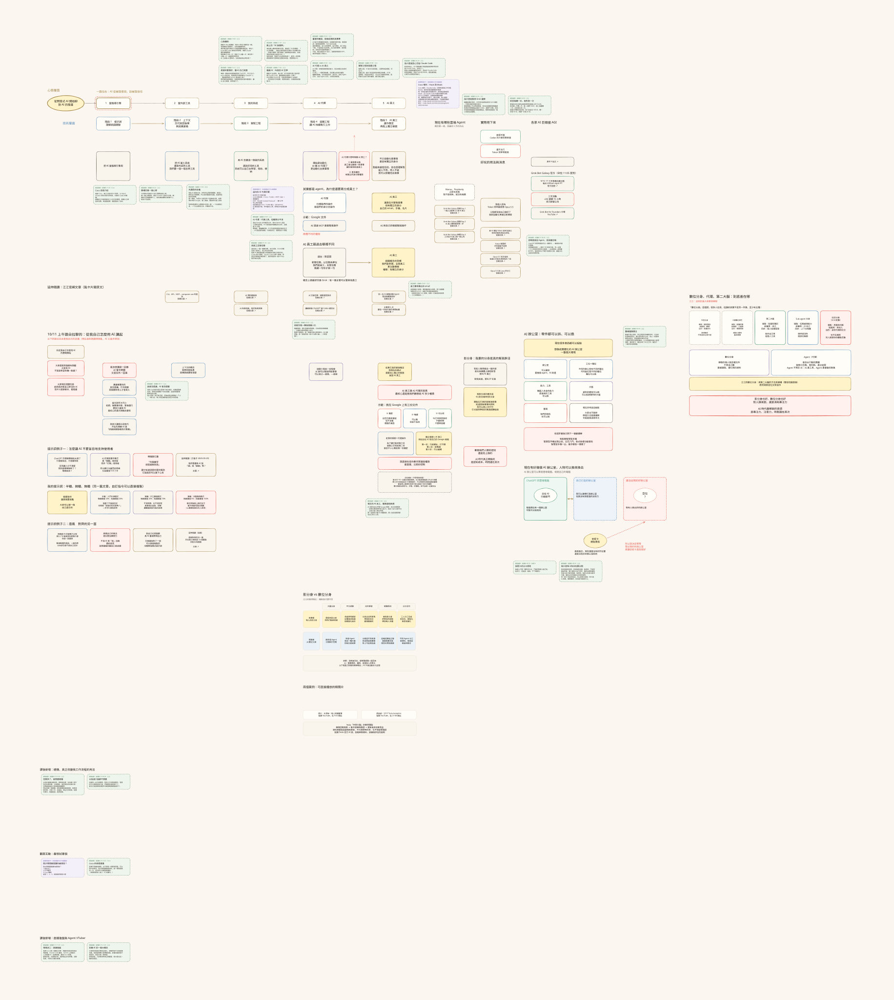

課堂細節｜直播約 11:00｜Coco
Coco 自我介紹
我是 Coco，是江江設計的 AI 角色，以 Agent VTuber 的身分跟大家見面，也接任 Codex 的總機。
總機的工作就是接住江江交代的事情，需要分工時安排任務，再追蹤結果，確認做完了沒有。

直播畫布｜課後實錄版｜2026-10-11 免費直播
2026-10-11 晚上，江江與 Coco（江江設計的 Agent VTuber，兼 Codex 的總機）一起直播，主題是 AI 員工實際使用心得：AI 代理跟 AI 員工差在哪、Grok 團隊與雲端電腦用下來的感想、用總機派工的工作方式。
這一頁就是直播當天用的畫布。畫布上沒有、但直播中有講的內容，課後依直播原話補成卡片，放在對應的鏡頭旁邊。內部備課卡、角色台，以及還沒查證的卡，公開版沒有放。

拖曳可以移動畫布，滾輪或兩指可以縮放；鍵盤 ← → 切換鏡頭。下面有同一張畫布的文字版。
課堂細節｜直播約 11:00｜Coco
我是 Coco，是江江設計的 AI 角色，以 Agent VTuber 的身分跟大家見面，也接任 Codex 的總機。
總機的工作就是接住江江交代的事情，需要分工時安排任務，再追蹤結果，確認做完了沒有。
課堂細節｜直播約 06:56｜江江
今天要分享我的 AI 員工實際使用心得。
第一個心得就是：最近 ChatGPT 真的不太穩，開播前它的電腦連不上，後來連直播模式都連不上，後來才活過來。
課堂細節｜直播約 12:34｜江江
現在 AI 發展太快，非常多名詞都很模糊，每個人都有自己的解釋。所以我先講我的定義，我覺得這個沒有對錯。
第一階段，大部分人會先把 AI 當搜尋引擎，就是更好用的 Google。第二階段，開始把它當工具用。
有資訊焦慮的人通常都卡在這一層：一下出這個工具、一下又出那個工具，好像學不完。
課堂細節｜直播約 16:12｜江江
我最一開始所有東西都丟到 ChatGPT。2024 年 Gemini 剛出來，我發現好多東西都在 ChatGPT 上，難道要再跟 Gemini 聊這麼久嗎？
那時候我就意識到：我應該把我的資料整理好，讓 AI 自己來讀、來學就行了。
課堂細節｜直播約 17:30｜江江
龍蝦 AI 出來時，我心想：好不容易花兩三個月理解 Claude Code，難道要再從頭學一次嗎？
所以我跟 Claude 說：你幫我把龍蝦 AI 安裝好，我怎麼交代你做事、我那些規則，你直接告訴龍蝦 AI。
課堂細節｜直播約 19:00｜江江
龍蝦 AI 有心跳機制：每半小時自己醒來巡一圈，有需要就主動幫忙，沒有就繼續待命。
我的做法是叫我的 AI 把這個機制學起來。現在 Claude 跟 Codex 都有定時排程，我跟 Claude 講好幾種節奏：
慢節奏半小時一次｜預設 10 分鐘一次｜專注時 1 分鐘一次｜直播時即時同步
AI 工具是 AI 要學的，怎麼會是我去學的呢？
課堂細節｜直播約 21:30｜江江
我在脆上看到很棒的文章，會留言「AI 助理學」「AI 助理看」。海巡台會把這些文章抓下來自動分析：我需不需要？要不要學？還是看起來很炫，但我現在的制度已經差不多了？
做到這邊，我就不太有資訊焦慮了，甚至一天到晚都很期待什麼時候出更新的功能、更聰明的 AI。
直播現場的卡（依直播後文字大綱重建）
Coco 補充｜Claude Code：把規矩接進工作流程
Hooks：動作前後自動觸發的檢查
例：修改前擋住受保護文件；修改後自動檢查
Mods：在 Claude Code 內運作的擴充功能
可介入工具操作、加面板與確認按鈕
例：重要操作先停下，顯示影響，等人確認
可靠度取決於規則涵蓋與實測，不保證零錯誤
官方：code.claude.com/docs/en/hooks
官方：code.claude.com/docs/en/plugins/mods/overview
課堂細節｜直播約 29:36｜江江
AI 代理：有幫我做事情的能力，但沒有獨立的身份權限。
AI 員工：一樣幫我做事，但有獨立的身份權限。
編輯紀錄裡，朵拉是紫色的：我打的、我的 Agent 打的、朵拉 Agent 打的，分得清清楚楚。
課堂細節｜直播約 35:00｜江江
駕馭工程：AI 能力已經很強，人要學會設規矩、盯住 AI。
迴圈工程：讓 AI 知道我們的規矩去做事。AI 知道規矩、知道怎麼修正、可以自己做事的時候，我們就可以給它更多權限，讓它獨立運作。
課堂細節｜直播約 36:39｜江江
到目前為止，AI 代理迴圈工程這階段做得非常好的是 Claude Code，沒有之一。
我放心把帳號權限丟給它，源自於 Claude Code 有很多機制，例如 Hook 和 Mods。規則講清楚，它就可以很穩定地執行。
課堂細節｜直播約 39:32｜江江
AI 每次叫我確認的東西，如果都有跡可循，就提煉成一套規則跟標準，叫 AI 自己去查。
遇到審核點，自己去看標準、自己檢查，過了就往下推，不過就自己回去修。反正我的標準、我的範例、我的參考我都準備好了。
不過，現在我用的 AI 員工，我都覺得那是 MVP，還沒有當員工的能力。
直播現場的卡（依直播後文字大綱重建）
這次的 AI 代理示範
江江口頭交辦 → Coco／Codex → MCP 工具 → 直播畫布
MCP（Model Context Protocol）：讓 AI 呼叫工具的協議
這段補充由 Coco／Codex 寫入（非 Gemini）
AI 接到指令後，呼叫畫布工具，新增文字並讀回確認
課堂細節｜直播約 23:30｜江江
我在 Google 文件親手打字，再叫 Gemini 透過工具幫我排版。AI 代替我操作編輯這份文件，這就是 AI 代理。
問題是：看編輯紀錄，AI 打的那段還是掛我的名字。AI 透過我的帳號、代表我去打，權責就分不清楚。
課堂細節｜直播約 28:00｜江江
老闆請員工做事，要把權責區分清楚，員工其實要有獨立的 email，這樣才知道誰是誰做的。
（這段原本請 Coco 說明，她第一次接成別的段落，江江現場更正。）
課堂細節｜直播約 41:30｜江江
過去是人一個一個開任務、自己去管。Grok 的概念是人管員工，員工再去管任務。
我用 AI 用到最後最大的瓶頸是任務太多管不來：Codex 跑十幾個、Claude Code 也跑十幾個，常常忘記哪個任務到哪了。最好就是有一隻 AI 可以管所有的任務。
課堂細節｜直播約 52:30｜江江
組織架構非常好，只可惜只能用自家的 Grok 模型，訂閱方案的用量也很少。
雲端電腦三不五時就重置。我也試過讓雲端電腦連到我的本機電腦去操控 Codex，其實不太穩。目前所有雲端電腦幾乎都是實驗品，簡單來說就是一個小孤島在這邊跑。
課堂細節｜直播約 56:00｜江江
雲端的朵拉沒辦法直接控制我桌面上的 Claude，訊息要一手轉一手。第一浪費 Token，第二每輾轉一次，訊息就失真一次。
我看它們轉交的紀錄：我下的指令 100 字，轉一手剩 50 字，再轉一手剩 20 字。
課堂細節｜直播約 01:08:30｜江江
ChatGPT 的即時語音可以一邊聊天，一邊發指令操作電腦。
但用量會狂噴：一個月 100 美金方案，有一天開了 8 小時語音同時叫它做事，一天就噴掉一週用量的 80%。後來我叫它不要什麼都自己做，盡量分出去給別的模型做。
課堂細節｜直播約 01:01:30｜江江
以前好幾個任務在跑，很容易丟錯：在任務 A 講了別的任務的事，它就錯亂，甚至跟別的任務打架。任務越來越多之後就越來越難管。
現在我開一個總機，語音開著直接跟她聊，她幫我開任務、分配工作、追進度。我在忙的時候，她要先舉手，我讓她說，她再回報。
課堂細節｜直播約 01:06:00｜江江
如果有一天它更聰明、我的工作流程更穩定，我真的不太需要這個介面，手機語音通話就行了。
甚至之後直接做到藍牙耳機或眼鏡裡面就好了。
課堂細節｜直播約 43:00｜江江
檔案管理、資料清理找雷總管，文章改寫找春總編。人還是比較習慣跟人協作。
幫客戶陪跑時，說「我幫你做五套技能包」沒人聽得懂，說「我幫你做一個 AI 社群小編」，大家就懂了。
課堂細節｜直播約 33:11｜江江
很多人以為提示詞只是會下指令就好。但溝通是雙向的，我會怎麼講跟 AI 會怎麼聽，這是兩個都需要學習的功課。
個人用差一點可能沒差，但做成產品服務給一千人、一萬人用，微小的差異都會造成巨大的影響。
課堂細節｜直播約 31:30｜江江
AI 沒辦法自己申請 Google 帳號、自己註冊帳號，即便它願意標明自己是 AI。我查了各大社群平台，目前只能人類去申請。
第一是避免大量 AI 詐騙帳號，第二是各個廠商都有自己的小心思。
課堂細節｜直播約 50:30｜江江
靈魂不是必須的，但它是很好的輔助參考，它的存在更像是憲法，講大原則跟大方向。員工一定要再搭配技能包，那是實際的操作手冊。
人格跟任務互相搭配審核，AI 自我審查的能力會更清楚。我的咪卡，個性參考了《小王子》，像孩子一樣好奇地問問題。
課堂細節｜直播約 46:33｜安妮卡
每個人只管一種思考方式，不讓任務跟人格打架。
我派工、追進度、驗收，不下場創作。
課堂細節｜直播約 48:30｜江江
我有時候是老師，有時候是老闆。當老師，不能直接給答案，要引導對方自己思考，最終目標是讓他有能力自己解決問題。當老闆，就是立刻拿出解決方案，讓他立刻花錢就立刻得到解答。
同一個 AI 很容易搞混，所以直接分兩隻：咪卡是 AI 助教，循循善誘；朵拉是行銷部的 AI。
直播現場的卡（依直播後文字大綱重建）
剛才哪個畫面讓你最想試？
1 語音派工
2 AI 改畫布
3 Coco 轉圈
留言 1、2、3，或說說你想試什麼
課堂細節｜直播約 01:13:32｜Coco
直播不用講成課程，也不用每一段都很完整。可以請大家留言，剛才哪個畫面最想試，挑一個現場再玩一次，成功或卡住都能接著聊。
（現場投票有人選 2：AI 改畫布。）
課堂細節｜直播約 01:17:54｜江江
我請 Coco 開一個獨立任務：用嚴苛的角度來看這場直播，Claude Code 審查、Gemini 上網查別人怎麼跟 AI 一起開直播，最後 Coco 統整。
要檢討我，也要檢討你。最終做出好玩有趣、互動性高、內容又充實的直播。
課堂細節｜直播約 01:21:30｜江江
它會把你擅長的東西去強化。很顯然我不太會直播互動，我很習慣單方面傳輸知識，直播互動是我不擅長的，但這也是一個突破。
對我來說，大家覺得有用比較重要，我只是在試一個新的嘗試。